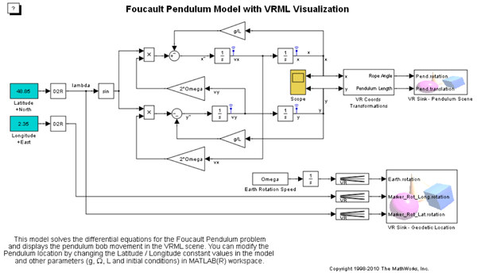
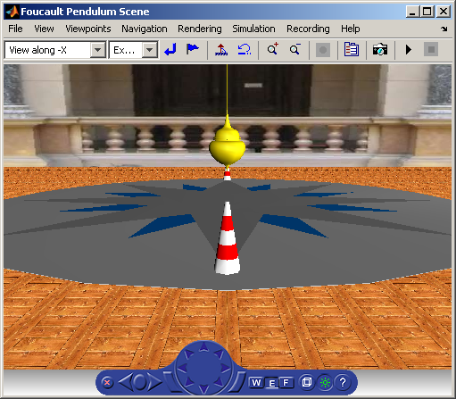
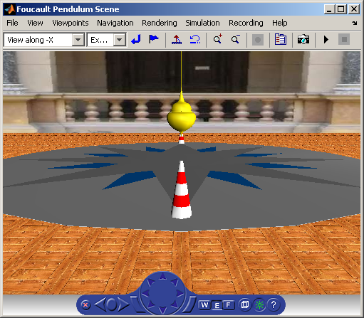

VRML 可視化を使ったフーコーの振り子モデル
このモデルでは、フーコーの振り子の問題の微分方程式が解かれ、振り子の振り玉の運動が VRML 画面に表示されます。 振り子の位置を変更するには、モデルの Latitude / Longitude 定数値およびその他のパラメーター (g、Omega、L、初期条件) を MATLAB® ワークスペースで変更します。
このモデルには 2 つのVRML 画面が関連付けられています。 フーコーの振り子自体を表示する画面と、振り子の地球上の地理的位置を示す画面です。 シミュレーション中、地球の座標系における振り子の現在の位置と初期位置が 2 つの矢印マーカーで表示されます。
 
